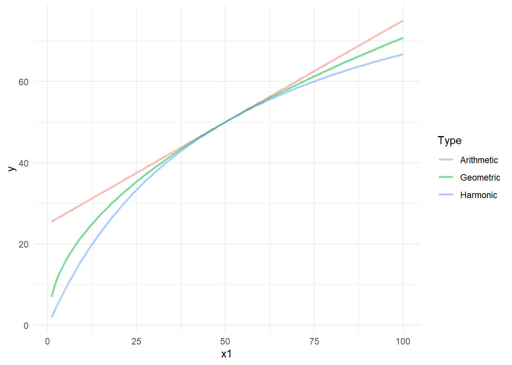
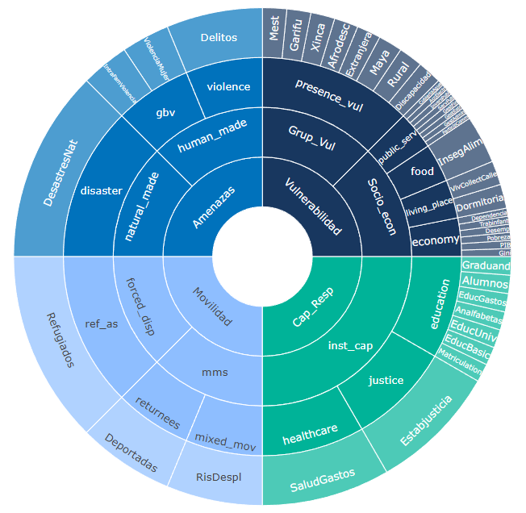
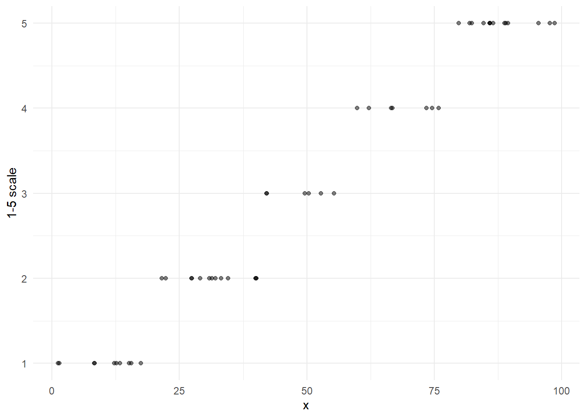

11 Aggregation and weighting
This chapter deals with the aggregation and weighting performed in the app. Aggregation is the process of mathematically combining indicators together into a single measure. This can be done, for example, using weighted means. The weights are therefore used in the aggregation step.
11.1 Weighting
In the input file to the A2SIT app, the user can specify weights for each indicator, and for all aggregates up to the index level. Weights are used in the aggregation step, and are rescaled to sum to 1 within each aggregation group.
Defining weights is a delicate business. Generally, the starting point should always be equal weights. You may wish to change weights in specific circumstances, for example if a panel of experts believes that one indicator or aggregate is significantly more important than the others in the group. Consider, however, that weights will always be contested, and equal weights are usually more defensible. However everything depends on context.
Consider also that the structure of the index is important in defining the individual weights of the indicators - this is evident from looking at the framework plot of the index (using the example data):

Some indicators are effectively weighted less because there are more of them in their aggregation group. The final weight of each indicator in the index is therefore due to the indicator weight, but also due to the weights of its parent groups, and the structure of the index. The framework plot above is in many ways the best way to visualise the index structure, in that it captures these complex interactions between weights and structure.
If you find that a given indicator or aggregate is not weighted according to your view of the concept, it may be an indication that the structure of the index should be reformulated, as opposed to reweighting the components. This can also lead to a more transparent outcome. Above all, avoid tuning weights to achieve a pre-conceived outcome.
11.2 Aggregation
Aggregation is mathematically combining indicators together. At the time of writing, the following aggregation methods are implemented in the A2SIT app:
- Weighted arithmetic mean
- Weighted geometric mean
It is important to realise that different aggregation methods have different properties, and correspondingly the choice of aggregation method will affect the results. In fact, the aggregation method can have quite a large impact on the results. In the app, aggregation methods are referred to as “Scenarios”, reflecting the fact that they lead to fairly different results. To understand which is best for your use-case, the methods are explained here.
11.2.1 Arithmetic mean
The arithmetic mean is the familiar and ubiquitous “average”. Here, we use the weighted version. Denoting a group of indicators as \(x_i \in \{x_1, x_2, ... , x_d \}\), the weighted arithmetic mean is calculated as:
\[ y = \frac{1}{\sum_{i=1}^d w_i} \sum_{i=1}^d x_iw_i \]
where the \(w_i\) are the weights corresponding to each \(x_i\). Here, if the weights are chosen to sum to 1, it will simplify to the weighted sum of the indicators. In any case, the weighted mean is scaled by the sum of the weights, so weights operate relative to each other.
Importantly, the arithmetic mean has “perfect compensability”, which means that a high score in one indicator will perfectly compensate a low score in another. In a simple example with two indicators scaled between 0 and 10 and equal weighting, a unit with scores (0, 10) would be given the same score as a unit with scores (5, 5) – both have a score of 5.
11.2.2 Geometric mean
An alternative is the weighted geometric mean, which uses the product of the indicators rather than the sum.
\[ y = \left( \prod_{i=1}^d x_i^{w_i} \right)^{1 / \sum_{i=1}^d w_i} \]
This is simply the product of each indicator to the power of its weight, all raised the the power of the inverse of the sum of the weights.
The geometric mean is less compensatory than the arithmetic mean – low values in one indicator only partially substitute high values in others. For this reason, the geometric mean may sometimes be preferred when indicators represent “essentials”. An example might be quality of life: a longer life expectancy perhaps should not compensate severe restrictions on personal freedoms.
The figure below shows how the two aggregation methods differ. In this simple example, two indicators on the \([1, 100]\) scale are aggregated together with equal weights - the first indicator x1 has values from 1-100, and the second always has the same value of 50.
The plot shows that the arithmetic mean is linear with respect to x1. However the geometric mean is not: in particular, low scores of x1 will result in a quite low aggregated score, approaching zero, despite the fact that the other indicator has a value of 50. The geometric mean never gives an aggregate score higher than the arithmetic mean.
Whichever aggregation method is chosen, all Admin-2 regions will be treated the same. Scores in composite indicators are dimensionless, so comparing scores between arithmetic and geometric means is not usually helpful. Usually it is better to compare ranks. Luckily, the A2SIT app has a tool for comparing scenarios which is described in Chapter 7.
11.3 Categorical rescaling
The scores that are produced from aggregating indicators will be on the \([0,100]\) scale, since they are the means of indicators on that scale. In the A2SIT app, there is an additional rescaling performed onto a categorical 1-5 scale. This is to simplify the interpretation of the scores: a score of 5 can be always considered high, and a score of 1 is always low. This rescaling is performed after aggregation, and is applied to all aggregate scores. The app lets you switch between the 1-5 scale or the 1-100 scale.
The 1-5 scale is created by dividing the observed range of each aggregate into five equally-sized intervals. The transformation looks like this:

Since the transformation is based on the observed range, it means that category 1 is defined as “the lowest fifth of the observed values of the indicator”. Importantly, the score range of this for one indicator will be different from the next.
11.4 COINr implementation
The COINr code for aggregation can be found in the f_build_index() function. The following is an extract:
# aggregate
coin <- COINr::Aggregate(coin, dset = "Normalised", f_ag = agg_method)
# generate results tables
coin <- f_generate_results(coin)
# add severity level df
coin <- f_make_severity_level_dset(coin)The full code can be found on GitHub.